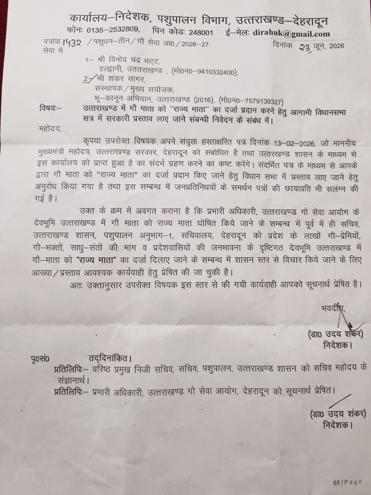
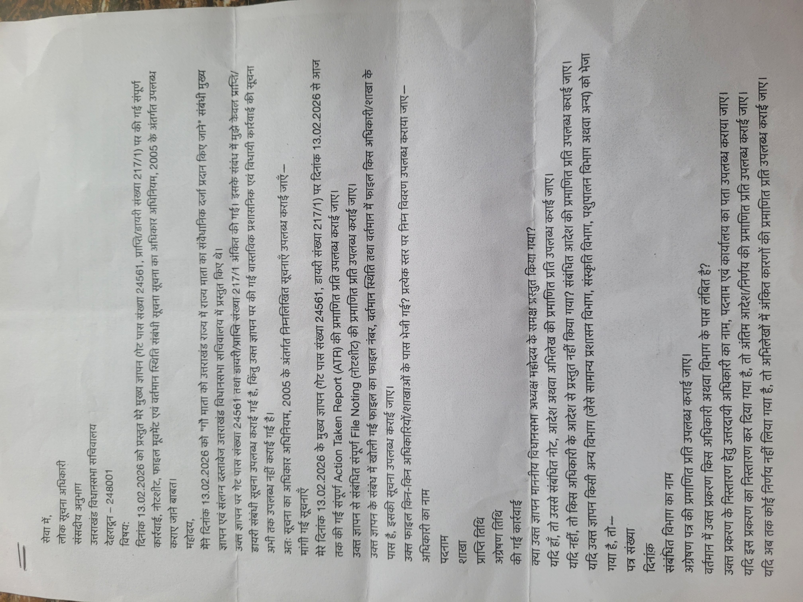
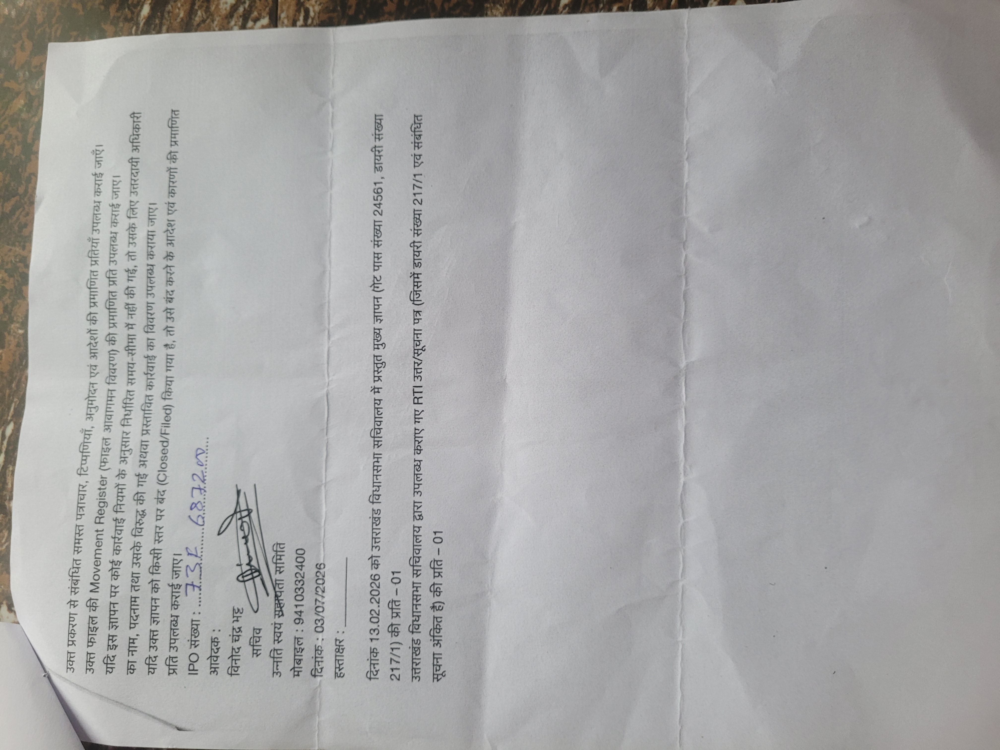
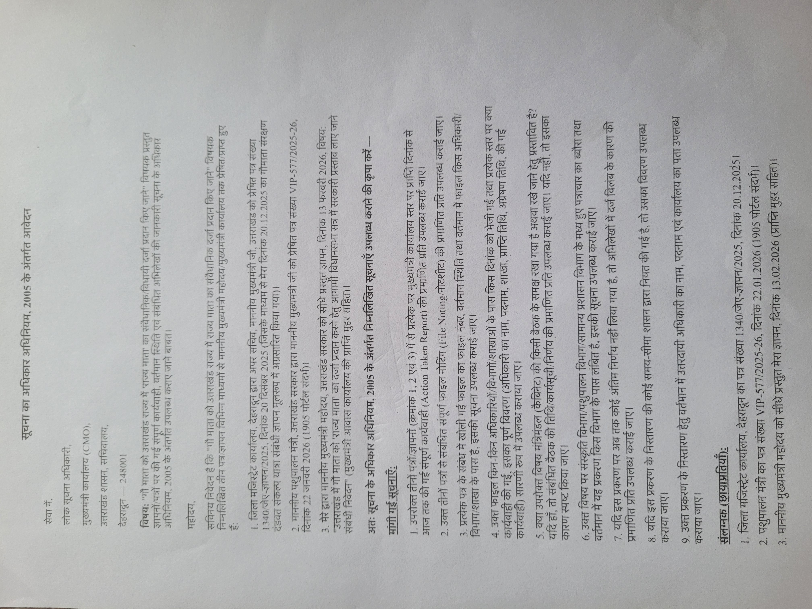
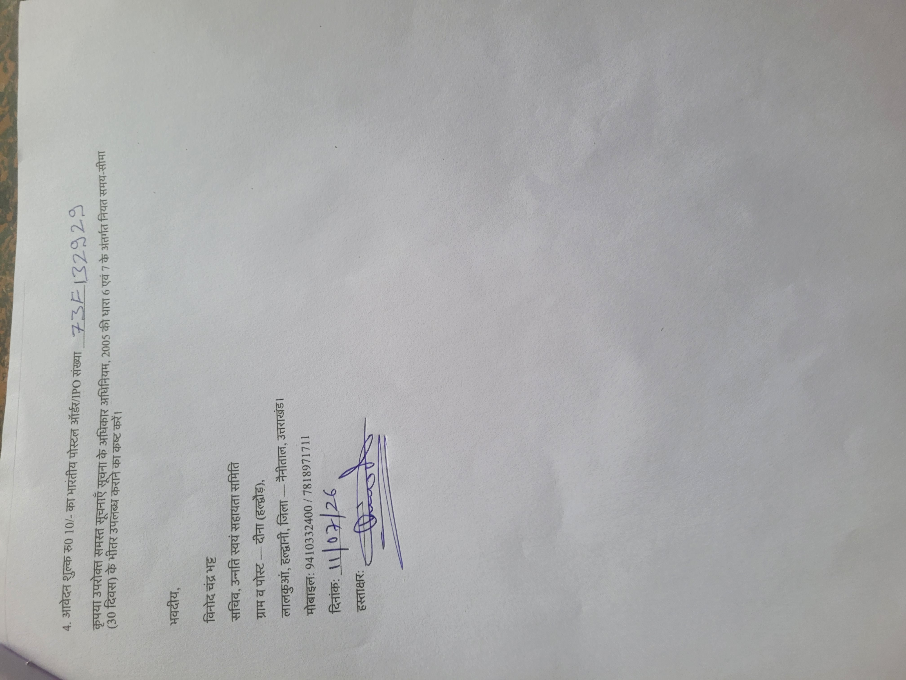
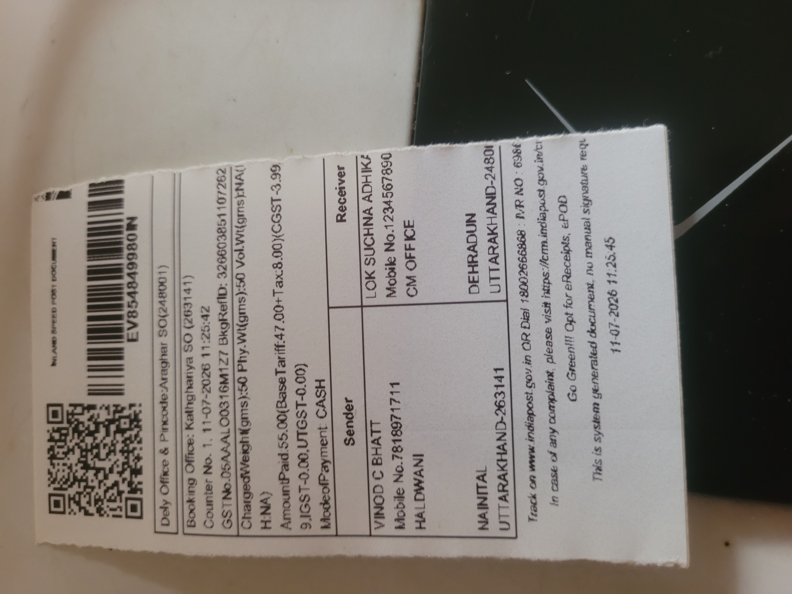
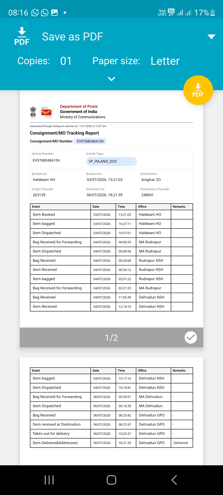
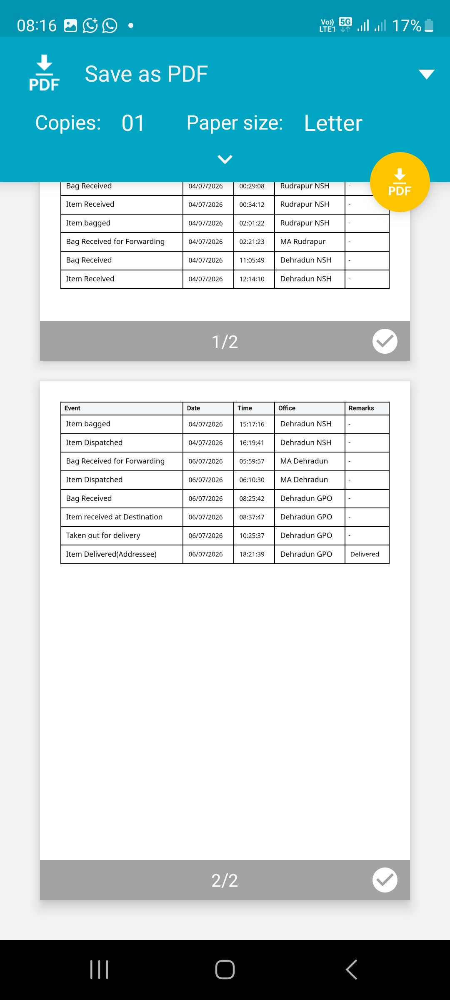
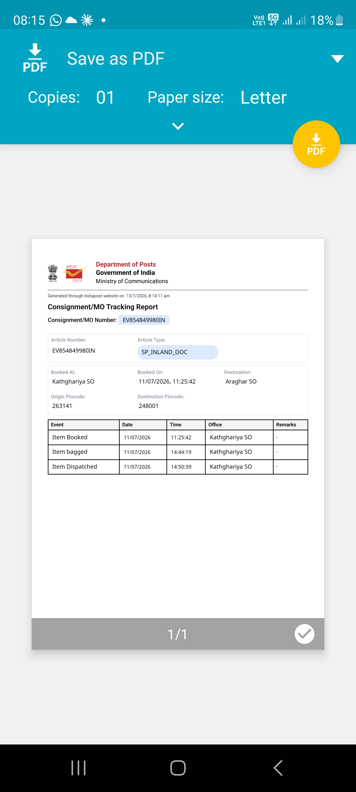

यह अभियान क्या है
देवभूमि उत्तराखंड में गौ माता को संवैधानिक/विधायी रूप से "राज्य माता" का दर्जा दिलाए जाने की मांग को लेकर उन्नति स्वयं सहायता समिति के सचिव श्री विनोद चंद्र भट्ट लगातार जनप्रतिनिधियों, शासन और विधानसभा सचिवालय से पत्राचार कर रहे हैं। नीचे इस मांग की अब तक की पूरी समयरेखा, इस पर सरकार की ओर से मिली प्रतिक्रिया, और अब पारदर्शिता के लिए दाखिल किए गए RTI आवेदनों का पूरा ब्यौरा दिया गया है — साथ में मूल दस्तावेज़ों की प्रमाणित प्रतियां भी।
ज्ञापन से RTI तक — पूरी यात्रा
दंडवत संकल्प यात्रा ज्ञापन — मुख्यमंत्री कार्यालय को अग्रसारित
जिला मजिस्ट्रेट कार्यालय, देहरादून द्वारा अपर सचिव, माननीय मुख्यमंत्री जी को गौ माता संरक्षण दंडवत संकल्प यात्रा से जुड़ा ज्ञापन आगे भेजा गया।
पत्र संख्या 1340/जेए-ज्ञापन/2025पशुपालन मंत्री का पत्र मुख्यमंत्री जी को
माननीय पशुपालन मंत्री, उत्तराखंड सरकार द्वारा माननीय मुख्यमंत्री जी को इस विषय पर पत्र प्रेषित किया गया।
पत्र संख्या VIP-577/2025-26 · 1905 पोर्टल संदर्भमुख्य ज्ञापन सीधे मुख्यमंत्री जी व विधानसभा सचिवालय में प्रस्तुत
"उत्तराखंड में गौ माता को राज्य माता का दर्जा प्रदान करने हेतु आगामी विधानसभा सत्र में सरकारी प्रस्ताव लाए जाने" विषयक संयुक्त हस्ताक्षरित ज्ञापन माननीय मुख्यमंत्री जी व उत्तराखंड विधानसभा सचिवालय दोनों जगह प्रस्तुत किया गया, साथ ही जनप्रतिनिधियों के समर्थन पत्रों की प्रतियां भी संलग्न की गईं।
गेट पास सं. 24561 · डायरी सं. 217/1निदेशक, पशुपालन विभाग, उत्तराखंड का जवाबी पत्र
निदेशक कार्यालय, पशुपालन विभाग, देहरादून ने सूचित किया कि यह प्रकरण पूर्व में ही सचिव, पशुपालन अनुभाग-1 को गौ-प्रेमियों व जनभावना के दृष्टिगत विचार हेतु प्रेषित किया जा चुका है, और उत्तराखण्ड गो सेवा आयोग को भी सूचनार्थ भेजा गया है।
पत्रांक 1432 / पशुधन-तीन / गौ सेवा आ0 / 2026-27RTI आवेदन — उत्तराखंड विधानसभा सचिवालय
लोक सूचना अधिकारी, संसदीय अनुभाग, उत्तराखंड विधानसभा सचिवालय को सूचना का अधिकार अधिनियम, 2005 के तहत आवेदन देकर 13.02.2026 के ज्ञापन पर हुई संपूर्ण कार्रवाई, नोटशीट, फाइल मूवमेंट व वर्तमान स्थिति मांगी गई।
IPO संख्या 73F68720विधानसभा सचिवालय RTI — स्पीड पोस्ट डिलीवर
हल्द्वानी प्रधान डाकघर से 03 जुलाई को बुक हुआ आवेदन रुद्रपुर व देहरादून होते हुए देहरादून GPO पहुंचा और वहीं से डिलीवर हुआ। इसी तिथि से सांविधिक 30-दिन की उत्तर अवधि की गणना शुरू होती है।
EV976804841IN · बुकिंग: हल्द्वानी HO, 03-07-2026 · डिलीवरी: देहरादून GPO, 06-07-2026, 18:21RTI आवेदन — मुख्यमंत्री कार्यालय (CMO)
लोक सूचना अधिकारी, मुख्यमंत्री कार्यालय, उत्तराखंड शासन को RTI आवेदन देकर तीनों पत्रों/ज्ञापनों (जिला मजिस्ट्रेट पत्र, पशुपालन मंत्री पत्र व 13.02.2026 का मुख्य ज्ञापन) पर हुई कार्रवाई, फाइल नोटिंग, कैबिनेट में प्रस्तुति की स्थिति और लंबित होने का कारण मांगा गया। कठघरिया डाकघर से स्पीड पोस्ट द्वारा प्रेषित — डिलीवरी आराघर SO, देहरादून के माध्यम से होगी।
IPO संख्या 73F132929 · ट्रैकिंग EV854849980INपारदर्शिता के लिए पूछे गए सवाल
दोनों RTI आवेदनों के माध्यम से निम्न जानकारियां सूचना के अधिकार अधिनियम, 2005 की धारा 6 व 7 के अंतर्गत मांगी गई हैं:
ज्ञापन पर अब तक की गई संपूर्ण Action Taken Report (ATR) की प्रमाणित प्रति
संबंधित फाइल की File Noting / नोटशीट व Movement Register की प्रति
फाइल वर्तमान में किस अधिकारी/शाखा के पास है, इसकी स्थिति
क्या विषय मंत्रिमंडल (कैबिनेट) की बैठक में रखा गया या रखा जाना प्रस्तावित है
यदि अंतिम निर्णय नहीं हुआ, तो विलंब के दर्ज कारणों की प्रमाणित प्रति
प्रकरण के निस्तारण हेतु उत्तरदायी अधिकारी का नाम, पदनाम व कार्यालय पता
अब आगे क्या
दोनों RTI आवेदन विचाराधीन हैं
* भारतीय डाक (indiapost.gov.in) की आधिकारिक ट्रैकिंग रिपोर्ट के अनुसार अद्यतन (13 जुलाई 2026 तक)। CMO कार्यालय में डिलीवरी की पुष्टि होते ही उसकी 30-दिन की समय-सीमा भी यहां जोड़ दी जाएगी।
प्रमाणित प्रतियां (स्कैन कॉपी)
पारदर्शिता हेतु सभी मूल पत्रों व RTI आवेदनों की स्कैन प्रतियां नीचे उपलब्ध हैं — बड़ा देखने के लिए किसी भी चित्र पर क्लिक करें।








